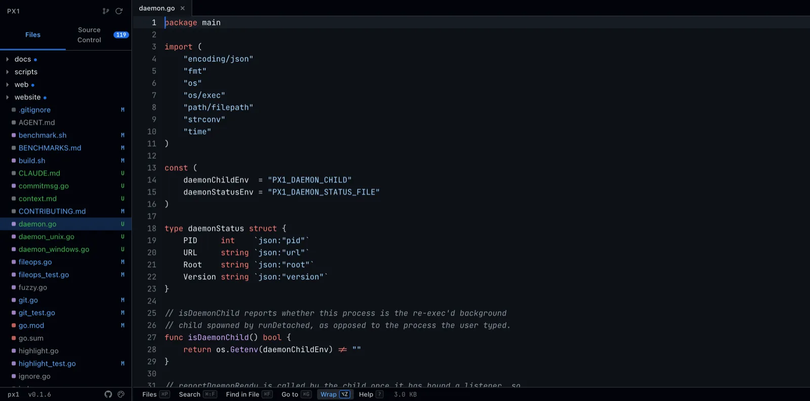

px1 is a single static binary that turns any directory into an instant, zero-config code workspace: browse, navigate, edit, stage/unstage, generate a commit message, and search. Nothing else.
$ curl -fsSL https://px1.pranitpatil.com/install.sh | sh

Everything else from the original project — LSP, an AI agent harness, markdown preview, telemetry, self-update, settings — was cut on purpose.
Open any folder and get a fast file tree, gitignore-aware, dirty-status badges included.
Fuzzy quick-open, jump-to-line, workspace regex search, all in single-digit milliseconds.
Click into an open file and type — no separate edit mode. Mod+S saves, with on-disk conflict detection.
A Source Control panel, VS Code-style: staged and unstaged changes as separate groups, one click each way.
Shells out to the claude CLI on your staged diff and drafts a Conventional Commits summary.
~280 languages via Chroma, windowed rendering so huge files cost the same as small ones.
Workspace-wide text and regex search, plus in-file find, without leaving the keyboard.
One binary, no dependencies. Works the same on your laptop or a remote box.
Run px1 with an optional file or directory.
-d runs px1 detached and hands your terminal straight back — start several workspaces at once, each stacking onto the next free port automatically.
| Flag | Default | Description |
|---|---|---|
| -port N | 7777 | Port to listen on (0 picks a free one) |
| -host H | 127.0.0.1 | Address to bind |
| -d | false | Run detached in the background, return the shell immediately |
| -no-open | false | Don't launch a browser automatically |
| -no-git | false | Disable git awareness (status, diff, staging) |